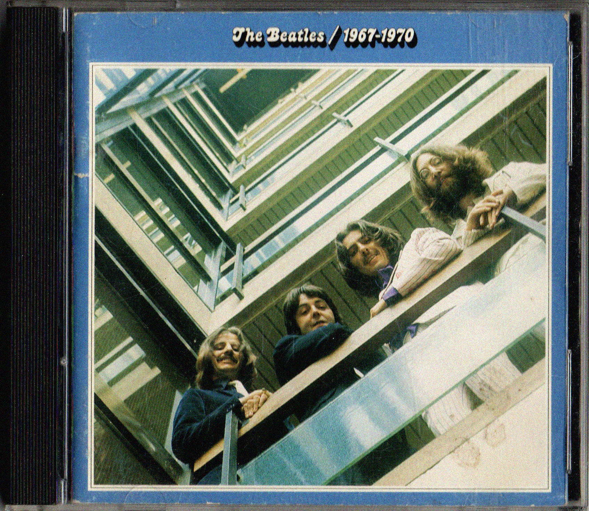
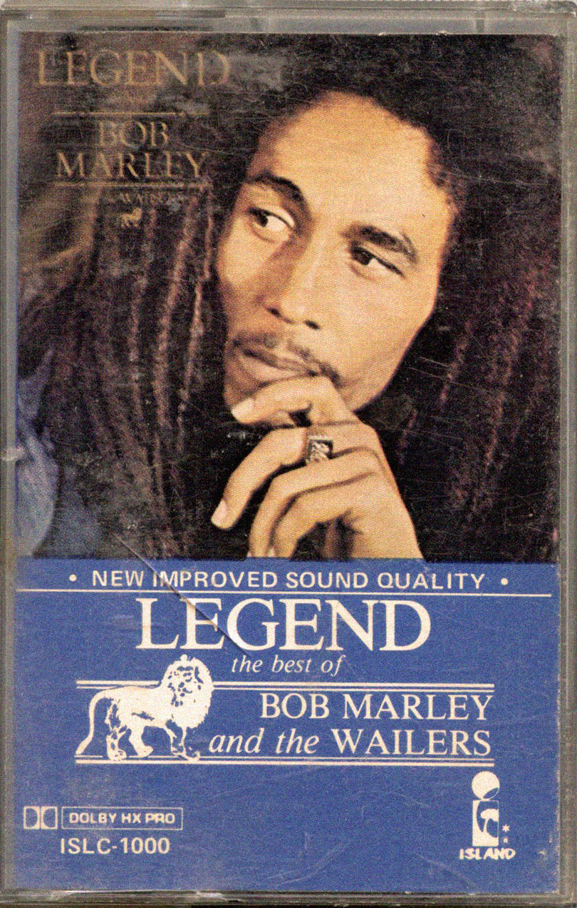
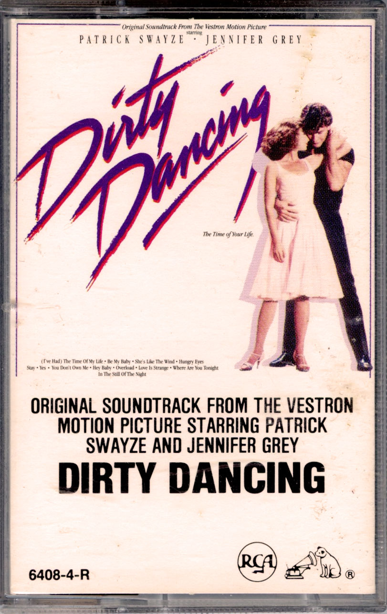
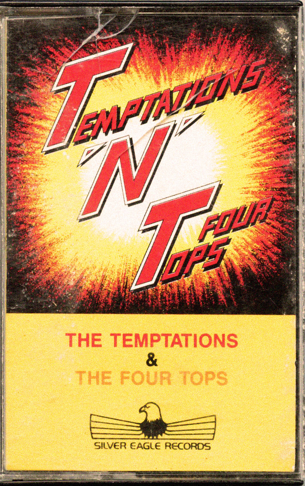

CD, Lamp, 2019CD, A Hard Day's Night, The BeatlesCD, High FidelityCD, Best of The Beach BoysCD, So Tonight That I Might See, Mazzy StarCD, The Miseducation of Lauryn Hill, Lauryn HillCD, Siamese Dream, Smashing PumpkinsCD, Good to Me, Otis ReddingCD, The Sign, Ace of BaseCD, Bringing It All Back Home, Bob DylanCD, Pocket Full of Kryptonite, Spin DoctorsCD, Time Out, Dave Brubeck QuartetCD, Ken Burns Jazz, Louis Armstrong

CD, 1967-1970, The BeatlesVinyl, Double Fantasy, John Lennon and Yoko OnoVinyl, Toto IV, TotoVinyl, Greatest, Bee GeesVinyl, Greatest Hits, The ManhattansVinyl, The Temptations Sing Smokey, The TemptationsVinyl, Greatest Hits, Vol. 2, The MiraclesVinyl, City to City, Gerry RaffertyVinyl, A Song for You, The CarpentersVinyl, Close to You, The CarpentersVinyl, The Carpenters Collection, The CarpentersCassette, Carpenters, The CarpentersCassette, Voice of the Heart, The Carpenters

Cassette, Legend, Bob Marley and the Wailers

Cassette, Dirty Dancing: Original Soundtrack, Various

Cassette, T'N'T, The Temptations and Four Tops
↑